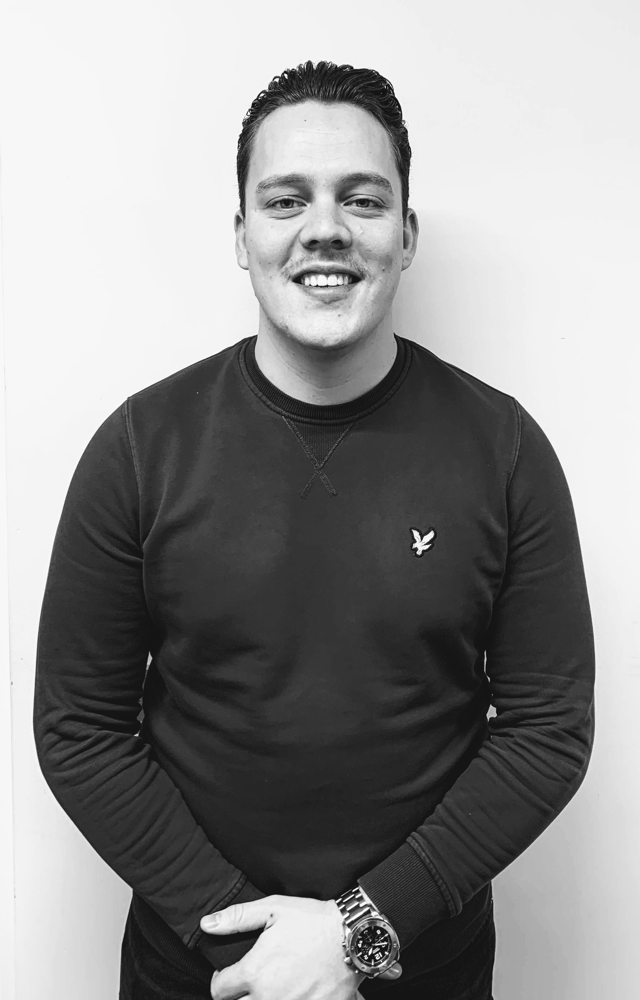

Welkom!
Mijn naam is Djordi Wedema, 22 jaar oud en ik kom uit Wijchen. Momenteel volg ik het vierde en laatste jaar van de opleiding Bedrijfskunde. Binnen de opleiding Bedrijfskunde volg ik de Minor Smart Industry. Deze minor richt zicht op Industry 4.0 en wat de mogelijkheden zijn van IoT, ofwel Internet of Things. Vanuit MSI is er de vraag gekomen om een portfolio op te stellen, zodat aangetoond kan worden of de student alle compententies beheerd die gesteld zijn.
Wat is Smart Industry?
Smart Industry ofwel Industry 4.0 is de trend van de automatisering en de gegevensuitwisseling binnen de industriële branche. Technologiën zoals Artificial Intelligence, Data Analytics en Machine Learning ontwikkelen zich razend snel. Hierdoor heeft de arbeidsmarkt een grote behoefte gekregen aan professionals die weten hoe technologie en bedrijfsvoering samengevoegd kunnen worden. Zowel op maatschappelijk, als op commercieel vlak, zullen er vraagstukken blijven komen omtrent Smart Industry. Tegenwoordig is het in deze steeds veranderende wereld zeer belangrijk om mee te gaan met de tijd. Het Smart maken van een bedrijf is hierin een must.
Waarom MSI?
De reden waarom ik voor de minor Smart Industry heb gekozen, is omdat ik het mooi vind hoe de technologie en het bedrijfsleven samen komen. Hierboven vertelde ik al meer over wat Smart Industry inhoudt en wat er allemaal veranderd is. Door deze minor wil ik nieuwe inzichten opdoen over hoe bedrijven omgaan met technologie en wat ervoor nodig is om dit te implementeren. Daarnaast vind ik ook het belangrijk dat ik mezelf ontwikkel op een gebied waar ik minder vanaf weet. Hoe breder je als Bedrijfskundige opgeleid bent, des te meer je je kwaliteiten kan benutten voor een bedrijf.
Korte rondleiding
In dit portfolio kunnen de volgende onderdelen worden gevonden:
- Introductie
- Competenties
- Beroepsproducten
- Bedrijfsbezoeken & Workshops
- Project Modderkolk
- Contact